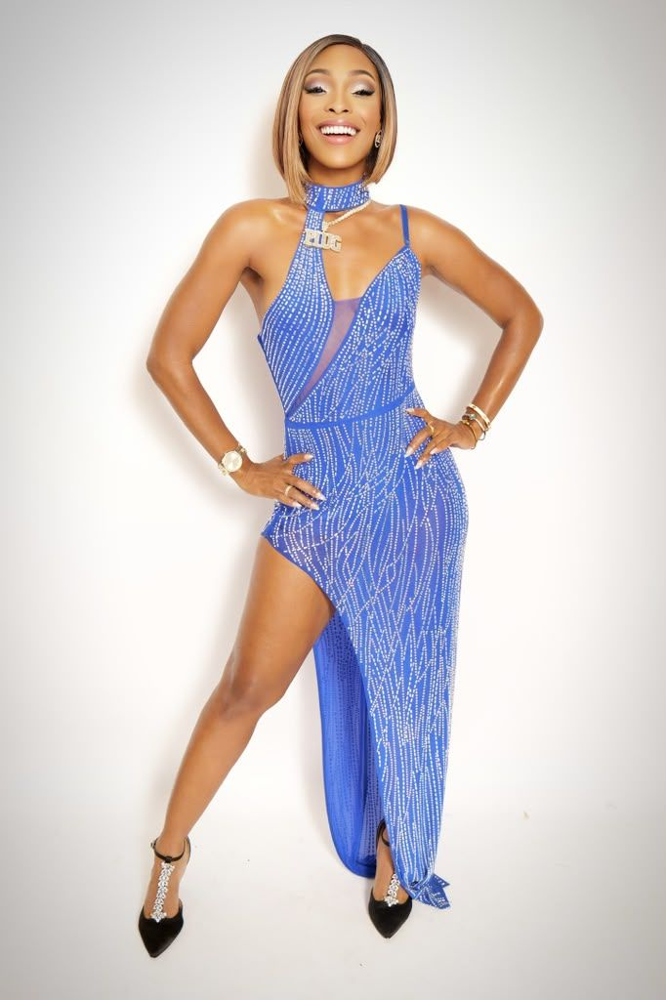
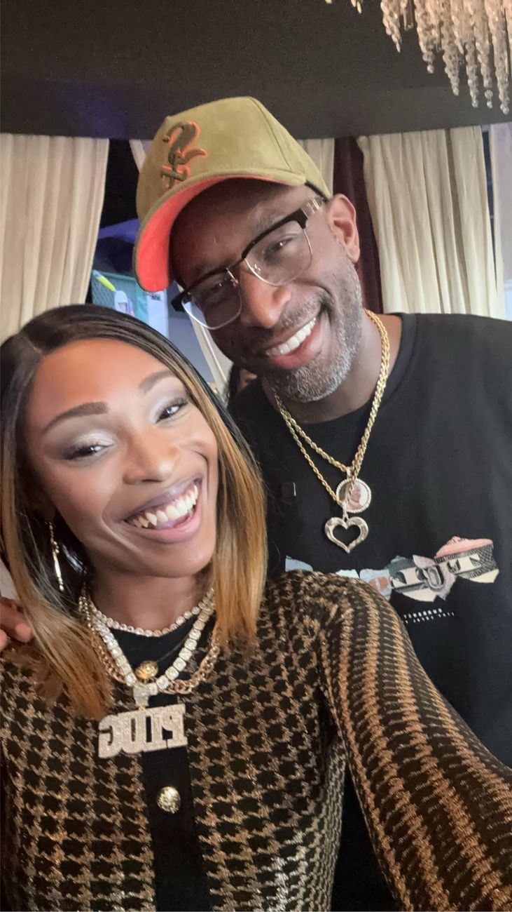
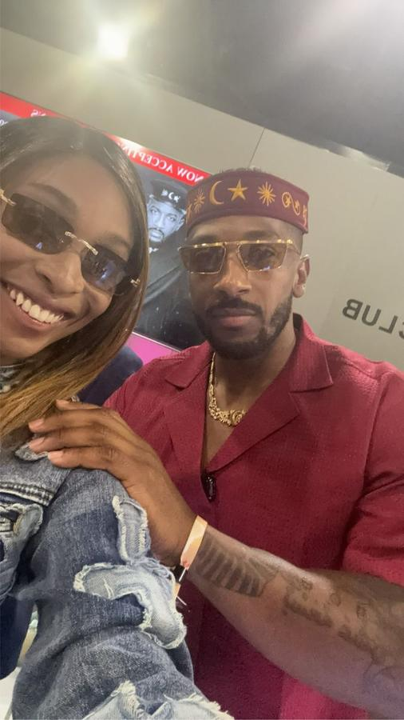

I’m Taylor. Nice to meet you.
Entrepreneur, publicist, event producer, brand strategist, businesswoman and talent liaison. Business. People. Impact.

Influence is my superpower.
I’m a 5-time award-winning publicist with more than 15 years in marketing, public relations, real estate, business development and brand growth. I’ve produced over 45 events in Atlanta and coordinated more than 220 nationwide, and my work has been featured on BET, MTV, Tubi, NBC and more.
My focus is simple: safe, engaging, culturally inclusive experiences that bring communities together while driving tourism and economic opportunity. I’ve produced World Cup events, youth activations, community giveaways and nonprofit initiatives, and most recently handled public relations and marketing support for Invest Fest.
I’ve been honored to work with doctors, politicians, musicians, actors, business owners, top executives, influencers and major music companies. As a serial entrepreneur, my passion is helping other entrepreneurs become financially free, independent business owners and connect their passion to their purpose.

Business. People. Impact.
Business
15+ years across marketing, public relations, real estate, business development and brand growth. Every plan starts with the outcome you want.
People
Relationships are the real currency. I connect brands, artists and organizations with the media, partners and communities that matter to them.
Impact
World Cup events, youth activations, giveaways, gift backs and nonprofit initiatives. Visibility is good. Giving back to the community is better.
The Resource Center.
Everything I’ve learned about bringing people together is going into a permanent home: a place in Atlanta to work, learn and gather.

Taylor Frucel at a glance
- Name
- Taylor Frucel (also Taylor Stubbs Frucel)
- Roles
- Publicist, entrepreneur, event producer, brand strategist, talent liaison
- Agency
- Taylor Success Enterprise, Atlanta, Georgia
- Building
- The Resource Center, a community coworking, learning and event space
- Experience
- 15+ years
- Events
- 45+ produced in Atlanta, 220+ coordinated nationwide
- Featured on
- BET, MTV, Tubi, NBC and more
- Serves
- Atlanta, nationwide and international clients
About Taylor.
Who is Taylor Frucel?
Taylor Frucel is an award-winning Atlanta-based publicist, entrepreneur, event producer, brand strategist and talent liaison with more than 15 years of experience across marketing, public relations, real estate and business development. She leads Taylor Success Enterprise, a full-service media, branding and public relations agency in Atlanta, Georgia.
Is Taylor also known as Taylor Stubbs?
Yes. Taylor Frucel also works under the name Taylor Stubbs (Frucel), and her media work has appeared under both names.
What does "Business. People. Impact." mean?
It is how Taylor describes her work: business growth for clients, relationship-building with the people and communities involved, and measurable impact through media, events and community initiatives.
What is Taylor's background?
Taylor has more than 15 years of experience in marketing, public relations, real estate, business development and brand growth. She has worked with doctors, politicians, musicians, actors, business owners, top executives, influencers and major music companies.
What events has Taylor produced?
Taylor has produced more than 45 events in Atlanta and coordinated more than 220 nationwide, including World Cup events, youth activations, community giveaways, gift backs and nonprofit initiatives.
Where has Taylor been featured?
Taylor has been featured on BET, MTV, Tubi and NBC, among other platforms, and has provided public relations and marketing support for Invest Fest.
What is Taylor's role in the Resource Center?
Taylor is the visionary and lead behind the proposed Resource Center, a community coworking, learning and event space in Atlanta, and is seeking funding and partners to open the flagship location.

Good work starts with a good conversation.
Say hello about a project, a partnership or the Resource Center.